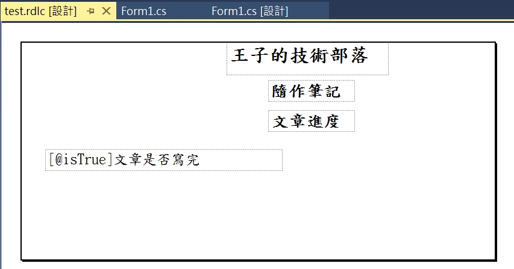

上一篇使用了程式碼去設計列印的內容
有時要更改的時候不是那麼得直覺(視覺化)
這篇試試看使用 rdlc 去設計列印的內容
使用的 Visual Studio 的版本是 2017
首先要先安裝擴充元件
點工具
然後點選擴充功能與更新
搜尋 “Microsoft rdlc” 會看到這兩個
都給他安裝下去
不然新增項目時會沒有 rdlc 可以用
裝完後就會多一個報表的選項可以新增
新增完後點選報表可以在右下角設定報表的大小

然後上面可以設定字體的樣式
最後設計出來是長這個樣子

看起來跟上一篇最後一張圖根本一模一樣(大概!)
要加上 ReportViewer 才可以預覽列印出來的樣子
如果沒有這個的話
就要在
工具-選擇工具箱項目裡去增加
但在2017 版好像只支援到 140版
所以可能要到 NuGet 去安裝較舊的版本
搜尋 ReportViewerControl
有 WebForm 跟 WinForm 要選對哦~